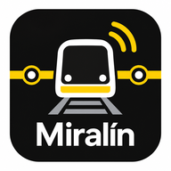

Motor iPhone
Instal·lació
Comprovant l’iPhone…
A Safari, prem Compartir i «Afegeix a la pantalla d’inici». Obre després la icona instal·lada.
Avisos de l’iPhone
Comprova que la PWA instal·lada pot demanar el permís i mostrar un avís local.
Connexió corporativa
La prova consulta directament aplicacions.tmb.cat. No envia credencials ni dades a TMBAgent.
Primer obre Miralín i identifica’t a la pàgina de TMB. Torna després aquí i fes la comprovació.
Seguiment rebut
Seguiment en primer pla
Disponible només si Safari pot llegir la resposta corporativa.
Seguiment aturat.
Abast d’aquesta prova
Podem provar instal·lació, permisos i lectura corporativa amb Safari obert.
El seguiment amb l’iPhone bloquejat i les Live Activities encara no estan disponibles en aquesta PWA.
Limitació detectada
Si TMB no autoritza la lectura entre dominis, Safari permet obrir Miralín però no deixa que aquesta PWA llegeixi la taula. El resultat es mostrarà com a bloqueig de connexió. No se substituirà per dades de miralin.cat ni per horaris simulats.